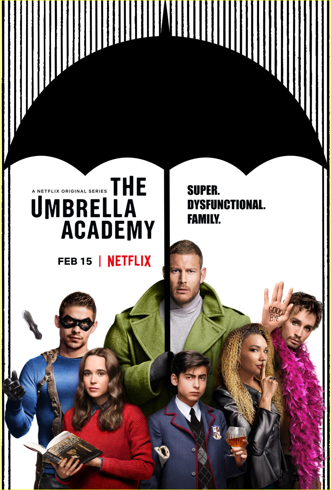
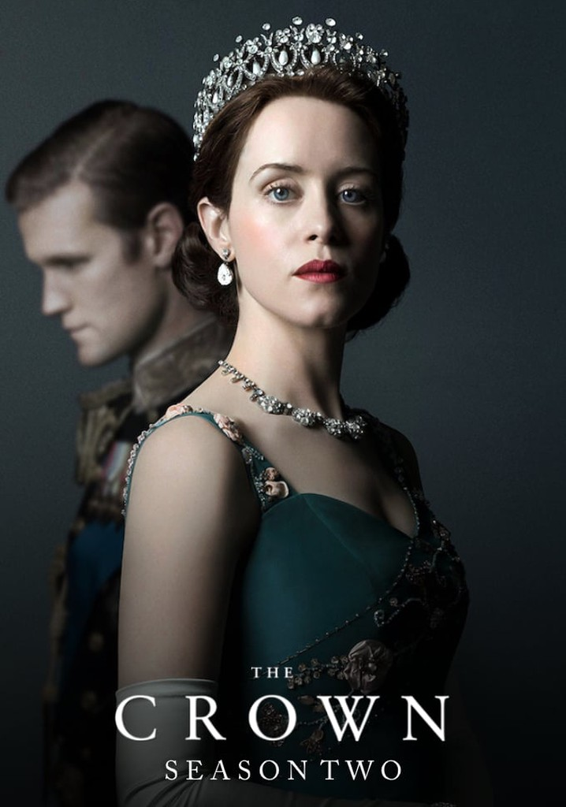
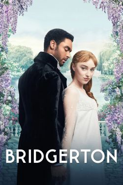

VOLTAR



A serie bridgerton
retrata a era Stuart
Na segunda
temporada, é
visivel guerras
temporada, é
visivel guerras
É retratada a vida da
rainha Elizabeth
rainha Elizabeth

Retrata vários temas importantes mesmo de forma singela como a luta pela a
igualdade de gênero